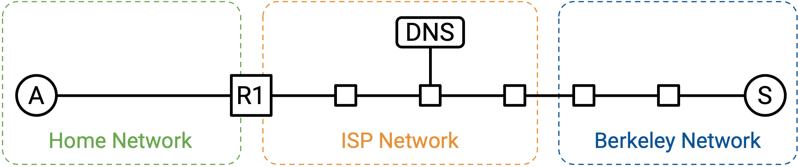
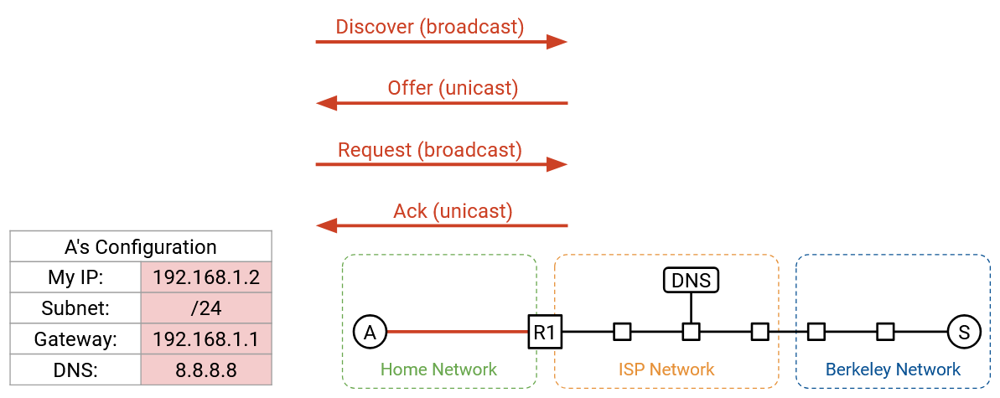
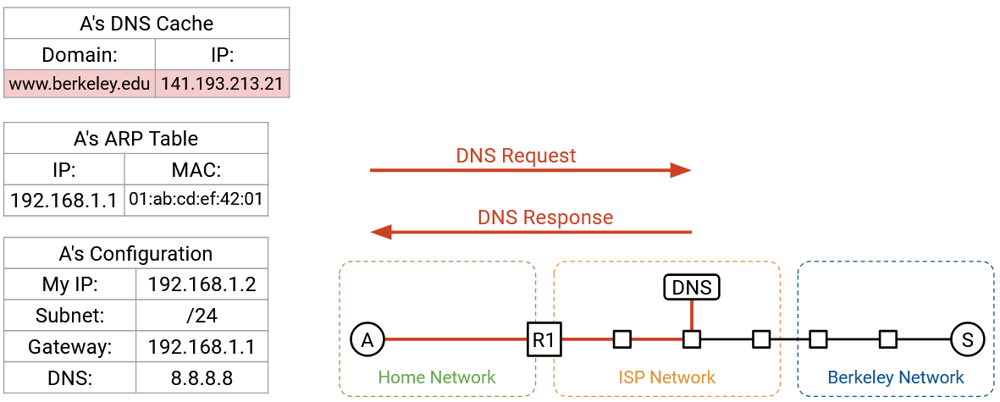
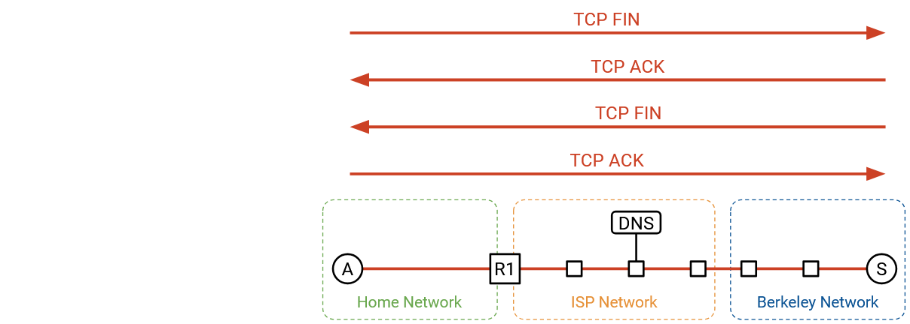
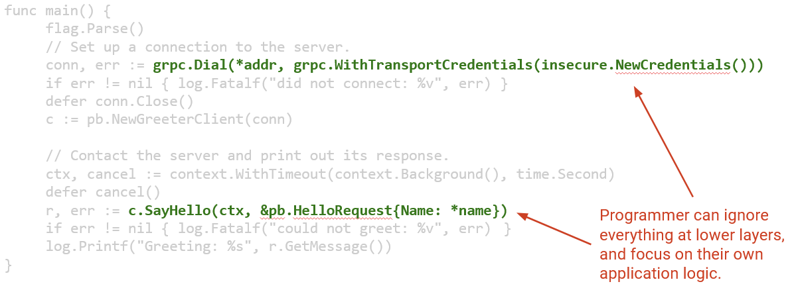

Kết nối End-to-End
Động lực
Trong phần này, chúng ta sẽ đi qua từng bước về những gì xảy ra khi chúng ta bật máy tính, cắm nó vào mạng Ethernet, và gõ www.berkeley.edu vào trình duyệt web. Trong quá trình đó, chúng ta sẽ thấy cách tất cả các thành phần khác nhau của mạng làm việc cùng nhau để xử lý yêu cầu của người dùng.
Chúng ta sẽ giả định rằng chúng ta không cần phải khởi động Internet từ đầu. Ví dụ, các routers đã và đang chạy các giao thức định tuyến và đã điền vào forwarding tables của chúng một cách tương ứng.
Bước 1: DHCP
Chúng ta bật máy tính và cắm nó vào một mạng Ethernet. Chúng ta chưa có bất kỳ thông tin nào về mạng, vì vậy chúng ta broadcast một yêu cầu DHCP (Giao thức Cấu hình Máy chủ Động).
Chúng ta sẽ giả định router gia đình là DHCP server (máy chủ DHCP), điều này phổ biến trong các mạng gia đình. Router/server sẽ unicast một gói tin đề nghị (offer) trở lại cho chúng ta. Gói tin đề nghị này chứa thông tin về mạng: subnet mask (mặt nạ mạng con), địa chỉ IP của default gateway (cổng mặc định), và địa chỉ IP của DNS server (máy chủ DNS). Gói tin đề nghị cũng cấp cho chúng ta một địa chỉ IP mà chúng ta có thể sử dụng.
Để hoàn tất giao thức DHCP, chúng ta gửi một thông điệp yêu cầu (request) xác nhận rằng chúng ta muốn sử dụng cấu hình đã được đề nghị, và router/server phản hồi bằng một thông điệp xác nhận (acknowledgement).
Bước 2: Tìm Router ở Lớp 2
Từ DHCP, chúng ta đã biết được địa chỉ IP của router, và forwarding table của chúng ta bây giờ cho biết rằng tất cả các packets không thuộc local network sẽ được chuyển tiếp đến router này. Chúng ta sắp sửa gửi một số packets đến DNS server (để tra cứu địa chỉ IP của www.berkeley.edu), và đến chính server Berkeley, cả hai đều có thể không thuộc local network.
Tuy nhiên, trước khi chúng ta có thể chuyển tiếp các IP packets đến router, chúng ta cần tìm ra MAC address Layer 2 của router, để chúng ta có thể gửi packet đến router bên trong local network.
Đầu tiên, chúng ta có thể xác minh rằng địa chỉ IP của router, 192.168.1.1, thuộc về subnet cục bộ, 192.168.1.2/24. Điều này cho chúng ta biết rằng router nằm trong local network, và bằng cách gửi một packet Ethernet đến MAC address của router, chúng ta sẽ đến được router.
Để tìm MAC address của router, chúng ta broadcast một yêu cầu ARP, hỏi MAC address của 192.168.1.1 (địa chỉ IP của router). Router nghe thấy yêu cầu này và trả lời, "Tôi là 192.168.1.1, và MAC address của tôi là 01:ab:cd:ef:42:01."
Bây giờ chúng ta có thể lưu trữ ánh xạ IP-tới-MAC này, và chúng ta đã biết MAC address của router. Miễn là mục nhập này còn trong bộ đệm, chúng ta sẽ không phải thực hiện lại cùng một yêu cầu ARP. Tất cả các yêu cầu trong tương lai ra Internet bên ngoài đều có thể được chuyển tiếp đến MAC address của router.

Bước 3: Tra cứu DNS
Tiếp theo, chúng ta cần tra cứu địa chỉ IP của www.berkeley.edu. Tất cả điều này được thực hiện trong hệ điều hành, sau khi mã của trình duyệt gọi một hàm như getaddrinfo để kích hoạt việc tra cứu DNS (Hệ thống Tên miền).
Từ DHCP, chúng ta đã biết địa chỉ IP của DNS server, 8.8.8.8. Chúng ta cũng biết rằng chúng ta đang ở trong subnet 192.168.1.2/24. DNS server không nằm trong local network của chúng ta, vì vậy chúng ta cần chuyển tiếp DNS packet (gói tin DNS) đến router.
Bây giờ chúng ta có thể xây dựng DNS packet yêu cầu của mình, từ trên xuống dưới.
Layer 7 (Lớp 7): Trong phần Question, chúng ta thêm một DNS record (bản ghi DNS) yêu cầu A record (bản ghi A) với địa chỉ IP của www.berkeley.edu. Chúng ta thêm header DNS với ID, số lượng bản ghi, v.v.
Layer 4 (Lớp 4): DNS chạy trên UDP (Giao thức Gói dữ liệu Người dùng). Chúng ta chọn một source port (cổng nguồn) ngẫu nhiên bất kỳ, vì chúng ta là client. Chúng ta chọn Port 53 cho destination port (cổng đích), vì đây là nơi các resolvers và name servers lắng nghe các truy vấn DNS.
Layer 3: Source IP là IP của chính chúng ta, được gán bởi DHCP. Destination IP là 8.8.8.8, địa chỉ IP của DNS server, mà chúng ta đã biết từ DHCP.
Layer 2: Source MAC là MAC address của chúng ta, được ghi sẵn trong phần cứng. Destination MAC là MAC address của router (hop tiếp theo), mà chúng ta đã biết từ ARP.
Với packet được xây dựng hoàn chỉnh, chúng ta có thể gửi các bit đi trên dây (Lớp 1 - Layer 1).

Khi packet đến router, nếu mạng đang sử dụng NAT (Network Address Translation - Biên dịch Địa chỉ Mạng), router có thể viết lại các headers UDP/IP để dịch địa chỉ IP riêng của chúng ta thành địa chỉ IP công cộng. Tuy nhiên, với tư cách là end host, chúng ta không cần phải lo lắng về NAT. Router sẽ thực hiện tất cả việc biên dịch cho chúng ta, tạo cho chúng ta ảo giác rằng chúng ta có thể sử dụng địa chỉ IP của riêng mình (từ DHCP).
Khi packet của chúng ta đến recursive resolver (bộ phân giải đệ quy) tại 8.8.8.8, nếu resolver chưa có câu trả lời của chúng ta trong bộ đệm, nó có thể cần thực hiện một số tra cứu bổ sung và hỏi các authoritative name servers (máy chủ tên miền có thẩm quyền) để lấy các bản ghi. Cuối cùng, recursive resolver tìm thấy câu trả lời và gửi A record trở lại cho chúng ta. Bây giờ chúng ta đã có địa chỉ IP của www.berkeley.edu.
Bước 4: Kết nối đến Trang web
Bây giờ chúng ta đã có địa chỉ IP của www.berkeley.edu, chúng ta có thể gửi packets đến Berkeley. Chúng ta đang sử dụng trình duyệt web, vì vậy mục tiêu của chúng ta là thực hiện một yêu cầu HTTP (Giao thức Truyền tải Siêu văn bản) đến server này.
HTTP chạy trên TCP (Giao thức Điều khiển Truyền vận), vì vậy trước tiên chúng ta phải thực hiện một TCP handshake (bắt tay TCP) để mở một kết nối với server Berkeley. Trình duyệt sẽ gọi một hàm như connect trên một socket (giao diện lập trình mạng) cụ thể để mở kết nối này, và hệ điều hành (nơi TCP đang chạy) sẽ thực hiện handshake và chuyển packets đến và đi từ trình duyệt.
TCP handshake được thực hiện: Chúng ta gửi một gói SYN, Berkeley gửi một gói SYN-ACK, và chúng ta gửi một gói ACK. Bây giờ chúng ta có một bytestream (luồng byte) giữa máy tính của chúng ta và server Berkeley.

Bây giờ, chúng ta có thể xây dựng packet HTTP của mình, từ trên xuống dưới.
Layer 7: Phương thức HTTP là GET. Tài nguyên chúng ta muốn là / (trang chủ). Phiên bản là HTTP/1.1.
Layer 4: HTTP chạy trên TCP. Trình duyệt có thể chọn bất kỳ source port nào, vì nó là client. Nhìn chung, port này có thể được ứng dụng chỉ định thủ công, hoặc ứng dụng có thể chỉ định "Port 0," là cách viết tắt để yêu cầu hệ điều hành chọn một ephemeral port (cổng tạm thời) ngẫu nhiên hiện không được sử dụng. (Ngoài lề, nghĩ lại về NAT, việc cho phép các ứng dụng chỉ định ports thủ công là lý do tại sao hai người dùng có thể chọn cùng một source port.) Destination port là 80, số port cố định cho HTTP.
Layer 3: Source IP là IP của chính chúng ta, được gán bởi DHCP. Destination IP là 141.193.213.21, địa chỉ IP của www.berkeley.edu đã được trả về từ truy vấn DNS của chúng ta trước đó.
Layer 2: Điều này giống như DNS packet của chúng ta trước đó. Source MAC là của chúng ta (được ghi sẵn trong phần cứng), và destination MAC là của router (được phát hiện và lưu trong bộ đệm từ ARP).

HTTP response (phản hồi HTTP) trả về với status code (mã trạng thái) 200 OK, và nội dung của phản hồi có mã HTML (Ngôn ngữ Đánh dấu Siêu văn bản) của trang web. Trình duyệt gọi hàm read trên socket để lấy các byte của HTTP payload (phần dữ liệu), cùng với status code và phản hồi, và xử lý chúng một cách tương ứng.
Trong bytestream, HTTP có thể thêm một số dấu phân cách như ký tự xuống dòng để biểu thị sự kết thúc của một yêu cầu hoặc phản hồi. Ngoài ra, các header HTTP như Content-Length có thể chỉ định độ dài của payload. Điều này cũng cho phép trình duyệt cấp phát đủ bộ nhớ để nhận phản hồi.
HTTP response trả về có thể kích hoạt thêm các yêu cầu khác. Nếu HTML trong phản hồi có cú pháp như  , điều này báo cho trình duyệt thực hiện một yêu cầu HTTP khác để lấy tài nguyên /logo.png. Hoặc, người dùng có thể nhấp vào một liên kết trên trang web như www.berkeley.edu/about.html, điều này cũng sẽ kích hoạt một yêu cầu HTTP khác đến cùng một server.
, điều này báo cho trình duyệt thực hiện một yêu cầu HTTP khác để lấy tài nguyên /logo.png. Hoặc, người dùng có thể nhấp vào một liên kết trên trang web như www.berkeley.edu/about.html, điều này cũng sẽ kích hoạt một yêu cầu HTTP khác đến cùng một server.
Hãy nhớ lại rằng nhiều yêu cầu HTTP đến cùng một server có thể được pipelined (truyền theo đường ống) qua cùng một kết nối TCP để tăng hiệu quả, vì vậy chúng ta có thể giữ kết nối TCP mở và tiếp tục sử dụng nó cho các yêu cầu và phản hồi HTTP tiếp theo.
Cuối cùng, sau một vài lần pipelining, client hoặc server chọn đóng kết nối. Quá trình handshake ngắt kết nối thông thường xảy ra, trong đó mỗi bên gửi một gói FIN, và cả hai packets FIN đều được xác nhận (acked). Chúng ta đã hoàn tất!
Lưu ý rằng các yêu cầu/phản hồi HTTP không nhất thiết phải chứa trong một packet duy nhất. HTTP được xây dựng trên TCP bytestream, vì vậy một yêu cầu hoặc phản hồi HTTP duy nhất có thể bị chia thành nhiều packets TCP/IP, trong đó mỗi packet có cùng các headers ở Layers 1-3, và các headers Layer 4 khác nhau ở số thứ tự. Chỉ có một header duy nhất cho toàn bộ yêu cầu/phản hồi HTTP, ngay cả khi yêu cầu/phản hồi đó được chia trên nhiều packets. Với HTTP, không còn mối tương quan một-một từ một yêu cầu/phản hồi đến một packet.
Sockets
Nếu bạn là người dùng truy cập một trang web trong trình duyệt, bạn không cần phải viết bất kỳ mã nào để chạy ứng dụng (HTTP) qua Internet. Tuy nhiên, nếu bạn là một lập trình viên viết ứng dụng của riêng mình, bạn có thể cần phải viết một số mã để tương tác với mạng.
Khái niệm trừu tượng socket cung cấp cho các lập trình viên một cách thuận tiện để tương tác với mạng. Khái niệm trừu tượng socket hoàn toàn tồn tại trong phần mềm, và có năm hoạt động cơ bản mà các lập trình viên có thể thực hiện:
Chúng ta có thể create (tạo) một socket mới, tương ứng với một kết nối mới. Trong một ngôn ngữ hướng đối tượng như Java, đây có thể là một lệnh gọi hàm tạo (constructor call).
Chúng ta có thể gọi connect (kết nối), để khởi tạo một kết nối TCP đến một máy ở xa. Điều này hữu ích nếu chúng ta là client trong một kết nối client-server.
Chúng ta có thể gọi listen (lắng nghe) trên một port cụ thể. Điều này không bắt đầu một kết nối, nhưng cho phép những người khác khởi tạo một kết nối với chúng ta trên port đã chỉ định.
Khi kết nối đã mở, chúng ta có thể gọi write (ghi) để gửi một số byte trên kết nối. Chúng ta cũng có thể gọi read (đọc), nhận một đối số N, để đọc N byte từ kết nối.
Khái niệm trừu tượng socket này cung cấp cho các lập trình viên một cách để viết các ứng dụng mà không cần suy nghĩ về các khái niệm trừu tượng ở cấp thấp hơn như TCP, IP, hay Ethernet.
Từ góc độ hệ điều hành, mỗi socket được liên kết với một số port Layer 4. Tất cả các packets đến và đi từ một socket duy nhất đều có cùng một số port, và hệ điều hành có thể sử dụng số port để phân kênh và gửi packets đến đúng socket.
Các Lớp trong Hệ điều hành
Trong phần cứng, Layers 1 và 2 được triển khai trên Network Interface Card (NIC) (Card Giao diện Mạng) của máy tính bạn. Layers 3 và 4 được triển khai trong chồng giao thức mạng (networking stack) trong hệ điều hành. Các ứng dụng Layer 7 được triển khai trong phần mềm. Lợi ích của việc đặt Layers 3 và 4 trong HĐH là các ứng dụng không phải lo lắng về việc triển khai lại chúng mỗi lần.
Với sự phân công lao động này, ứng dụng chỉ cần nghĩ về dữ liệu. NIC chỉ cần nghĩ về các packets. Chồng giao thức mạng trong HĐH dịch giữa các kết nối và các packets.
Xem các Gói tin
Các công cụ như tshark và wireshark tồn tại nếu bạn muốn xem các packets được gửi qua mạng. Những công cụ này hữu ích khi gỡ lỗi phần mạng trong mã của bạn.
Trong trình duyệt, bạn cũng có thể sử dụng tab Network của bảng điều khiển inspect element để xem dữ liệu được gửi và nhận.
Nếu bạn thực sự xem các packets thô được gửi qua mạng, bạn sẽ thấy một số phức tạp trong thế giới thực mà chúng ta đã không đề cập trong phần hướng dẫn đầu cuối-đến-đầu cuối của mình. Ví dụ, các packets có thể được mã hóa và gửi qua TLS (Transport Layer Security - An ninh Tầng Giao vận). Ngoài ra, nếu chúng ta đang sử dụng HTTP/3.0, các packets có thể được gửi qua QUIC (biến thể UDP được tối ưu hóa cho HTTP) thay vì TCP.
Nhìn lại về Phân tầng
Bức tranh đầu cuối-đến-đầu cuối đầy đủ cho phép chúng ta thấy tại sao phân tầng là một nguyên tắc hữu ích để xây dựng mạng. Chúng ta đã có thể giải quyết các vấn đề cụ thể ở một lớp duy nhất, mà không cần suy nghĩ về tất cả các lớp cùng một lúc.
Thực tế, chúng ta hoàn toàn không thảo luận về Layer 1 trong lớp học này. Chúng ta đã không nói về kỹ thuật điện hay vật lý cần thiết để gửi tín hiệu qua một sợi dây. Tuy nhiên, chúng ta vẫn có thể xây dựng các lớp khác trên Layer 1, mà không cần biết chính xác Layer 1 hoạt động như thế nào.
Trong lớp học này, chúng ta đã thảo luận HTTP là giao thức Layer 7 chủ yếu, nhưng HTTP là một giao thức tương đối đơn giản. Có thể nhiều ứng dụng muốn xây dựng cùng một chức năng phức tạp trên HTTP, nhưng họ không muốn mỗi người phải tự viết mã cho chức năng đó một cách độc lập. Để hỗ trợ điều này, chúng ta thực sự có thể xây dựng thêm các giao thức trên HTTP, để các lập trình viên không phải lúc nào cũng bắt đầu từ đầu với HTTP.
Một ví dụ về một giao thức trên Layer 7 là một thư viện remote procedure call (RPC) (gọi thủ tục từ xa). Điều này cho phép một lập trình viên viết một số mã, trong đó một số hàm thực sự thực thi trên một máy tính khác ở nơi khác trong mạng. Sẽ rất phiền phức nếu mọi người phải tự viết RPC trên HTTP từ đầu, vì vậy thay vào đó, các thư viện như Apache Thrift và gRPC tồn tại để trừu tượng hóa thêm nhiều chi tiết hơn nữa khỏi lập trình viên.
Đây là một ví dụ về một số mã mạng mà một lập trình viên có thể viết. Nó lập trình một client để nói xin chào với một server ở xa.
Lưu ý rằng tất cả các giao thức mạng mà chúng ta đã thảo luận đều hoàn toàn bị ẩn đằng sau hai dòng lệnh gọi đến các thư viện mạng. Lập trình viên không cần phải suy nghĩ về HTTP, TCP, IP, Ethernet, ARP, DHCP, hoặc bất kỳ giao thức cấp thấp nào khác. Vẫn rất hữu ích khi biết về các giao lức này nếu chúng gặp sự cố, và việc hiểu các giao thức có thể giúp bạn tối ưu hóa mã của mình cho các giao thức cụ thể, nhưng cuối cùng, phân tầng là một công cụ trừu tượng hóa rất mạnh mẽ.